In hierdie hoofstuk gaan jy leer oor kragte wat op
strukture inwerk en hulle kan laat swig (faal), oor
hoe om strukture te versterk, en oor die verskillende materiale wat in strukture
gebruik word.
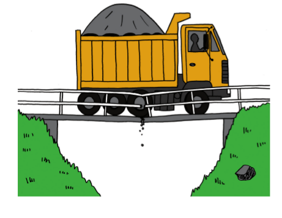
Figuur 1: Hierdie brug kan nie die kragte wat op hom inwerk,
weerstaan nie.
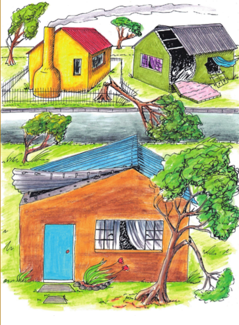
Figuur 2: As ’n huis nie sterk genoeg is nie, kan die wind dit
uitmekaar waai.
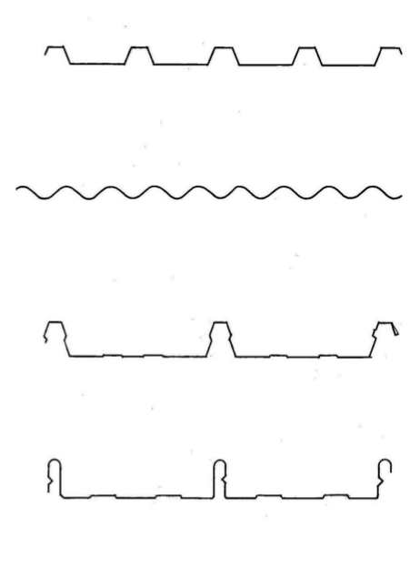
Figuur 3: Dakplate word in verskillende vorme verskaf.
Kragte werk op verskillende plekke in
Identifiseer en analiseer kragte
Die gewig van die seun
druk na onder op die
stoel, soos wat deur die pyl gewys word. As een
voorwerp teen ’n ander voorwerk druk, sê ons dat
daar ’n krag “uitgeoefen” word op die voorwerp.
In hierdie geval kan gesê word dat die seun ’n
afwaartse krag op die stoel
uitoefen
, of dat daar ’n
afwaartse las op die stoel is.
In elkeen van die beelde op hierdie en die volgende bladsy, maak teken 'n
pyl om te wys hoe die las op die struktuur werk.
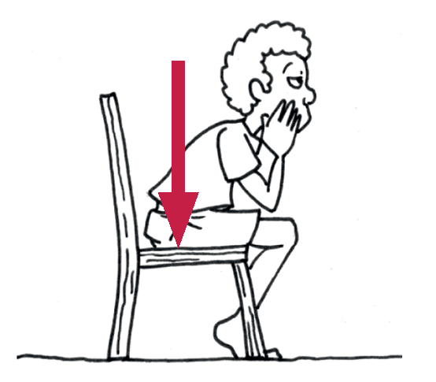
Figuur 4: Die seun sit stil op die stoel.
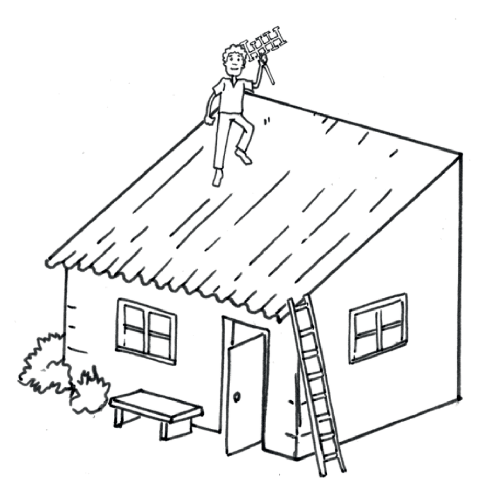
Figuur 5: ’n Man loop op die dak.
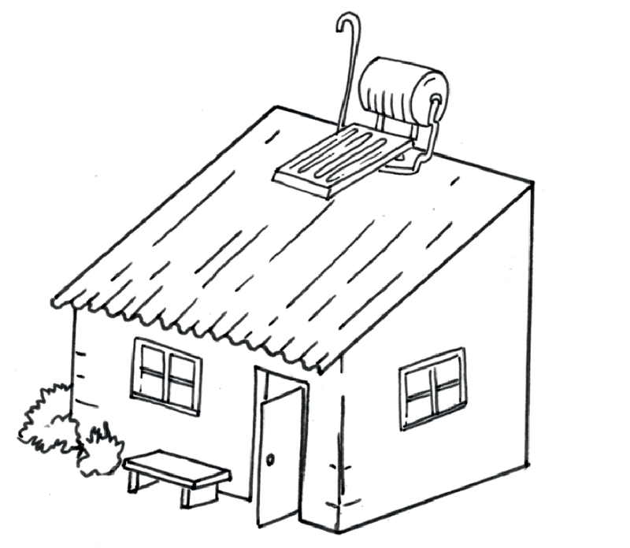
Figuur 6: ’n Sonverwarmingstelsel op ’n dak
Is die las op die dak in figuur 5
die hele tyd op dieselfde plek?
Waarom sê jy so?
Is die las op die dak in
figuur 6 die hele tyd op dieselfde plek? Waarom sê jy
so?
Is die las op die brug in
figuur 7 altyd op dieselfde plek? Waarom sê jy so?
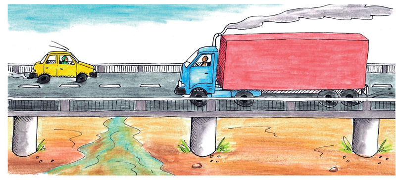
Figuur 7: Voertuie gaan oor ’n brug.
Solank iemand stil op ’n stoel bly sit, bly die las op
die stoel op dieselfde plek. Dit word ’n
vaste
of ’n statiese krag genoem.
In die prent hierbo oefen die motor
en die vragmotor elk ’n krag op die brug uit.
Kan die krag wat in elke geval uitgeoefen word ’n statiese krag genoem word?
Verduidelik waarom jy so sê.
Wanneer ’n bewegende voorwerp ’n krag op ’n
ander voorwerp uitoefen, dan sê mens die krag is
dinamies
.
In elk van die volgende gevalle,
sê of die krag wat op die tafel uitgeoefen word
staties of dinamies is. Verduidelik in elke geval jou antwoord.
’n Pot met blomme wat op die
tafel staan.
’n Kat wat op die
tafel loop.
’n Seun wat ’n sokkerbal oor die
tafel rol.
’n Man wat die tafel skrop.
Wat is die verskil tussen die
lasse wat op die twee tafels hieronder uitgeoefen
word?
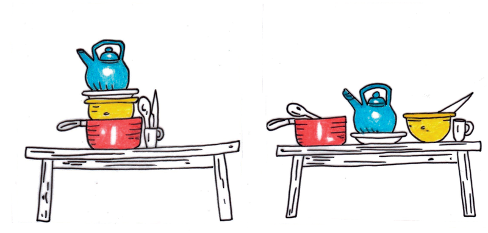
Figuur 8: Verskillende maniere om potte op ’n tafel te pak.
Kyk na die verskillende maniere waarop die twee
vragmotors hieronder gelaai is.
Op die een vragmotor vorm die dromme ’n las orals oor die hele laaibak van die
vragmotor. Op die ander vragmotor is die hele las een groot drom. Die enkele
drom
oefen ’n krag op slegs een klein gedeelte van die laaibak uit.
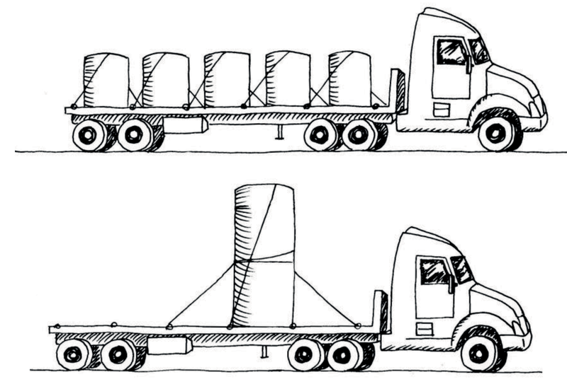
Figuur 9: Verskillende soorte vragte op twee vragmotors.
’n Las wat ’n gelyke krag uitoefen oor die hele
struktuur wat dit ondersteun, word ’n
eweredig
verspreide las
genoem.
’n Las wat ’n krag uitoefen op een gedeelte van die
struktuur wat dit ondersteun, word ’n
oneweredig
verspreide las
genoem.
Dink aan ’n huis met ’n
sinkplaatdak en die kragte wat die sinkplate op die
dakstruktuur uitoefen.
Is die las eweredig of
oneweredig versprei? Waarom sê jy so?
Is die las staties of dinamies?
Waarom sê jy so?
Dink aan mense wat met ’n houttrap
op en af loop.
Is die las eweredig of
oneweredig versprei? Waarom sê jy so?
Is die las staties of dinamies?
Waarom sê jy so?
Jy moet twee houttafels ontwerp en
jy is versoek om so min hout as moontlik
te gebruik. In die geval van die een tafel, sê die ontwerpopdrag dat die las op
die tafel altyd staties en eweredig versprei sal wees. In die geval van die
tweede
tafel, sê die ontwerpopdrag dat dit dieselfde las as die eerste tafel sal dra,
maar
dat die las soms dinamies en ook oneweredig versprei sal wees. Beskryf hoe jou
ontwerpe vir die twee tafels van mekaar sal verskil en verduidelik waarom.
Kragte werk op verskillende maniere in
Kragte kan op die
volgende maniere op strukture en
dele van strukture inwerk:
trekkrag,
wringkrag,
drukkrag,
skuifkrag, en
buigkrag.
Die verskillende stukke van ’n raamstruktuur
word
seksies of elemente of dele van die struktuur genoem.
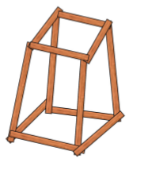
Figuur 10: ’n Raamstruktuur wat
van planke gemaak is.
Kragte kan stoot, trek en verdraai
Gebruik gebruikte skryfpapiervelle en rol ses buise
daarmee. Plak hulle met gom of
kleefband vas om te keer dat hulle afrol.
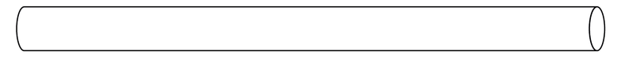
Figuur 11
Plaas jou hande aan beide eindpunte
van ’n buis en druk hulle na mekaar toe.
As jy dit doen, oefen jy “drukkrag” op die buis uit.
Gryp ’n buis aan elkeen van sy
eindpunte en probeer om dit uitmekaar te
trek. As jy dit doen, oefen jy “trekkrag” op die buis uit. Jy plaas die buis
onder
spanning.
Plaas die eindpunte van ’n buis op
twee boeke en druk afwaarts in die middel
van die buis. Wat gebeur en watter soort krag het jy op die buis toegepas?
Neem ’n buis by sy twee punte en draai dit
soos in hierdie prent gewys word.As jy dit
doen, pas jy “wringkrag” toe.
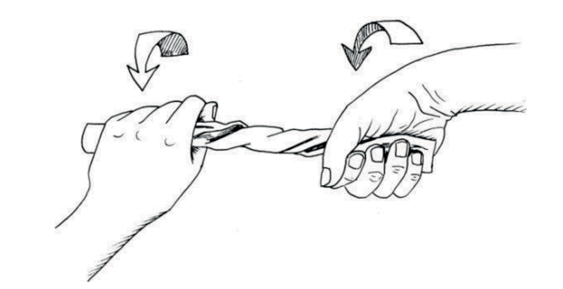
Figuur 12
Maak twee buise aan mekaar vas
deur ’n vuurhoutjie of klein stokkie daardeur
te druk, soos hieronder gewys word.
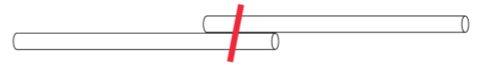
Figuur
13
As jy die twee papierbuise van
mekaar wegtrek, pas jy “skuifkrag” op die stokkie
toe.
Vind krag in vorm
Vou ’n gebruikte A4-papiervel oor
sy lengte in twee helftes.
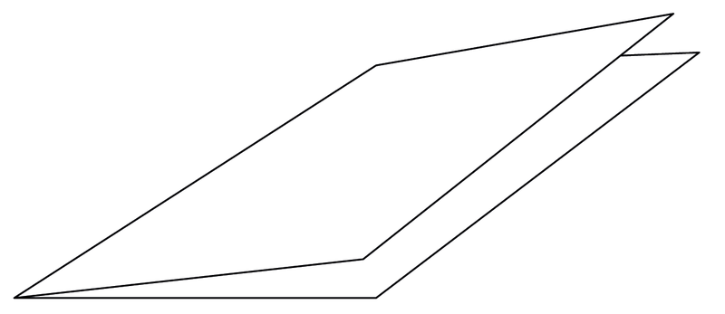
Figuur 14
Vou dit weer:
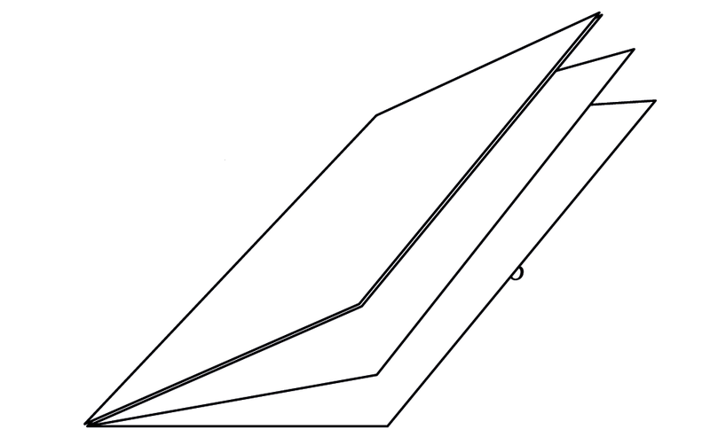
Figuur 15
Vou dit ’n derde keer, sodat jy ’n
plat
strook het wat agt lae dik is.
Maak nog twee gevoude stroke soos
hierdie een.
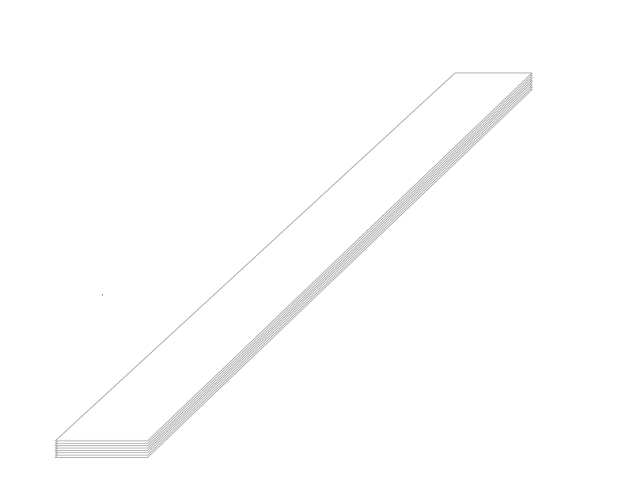
Figuur 16
Plaas die gevoude strook oor die
rand van jou skoolbank soos hieronder gewys
word. Druk dit met een hand op die bank vas en druk liggies met die ander
hand op die oorhangende stuk van die strook om dit na onder te laat buig.
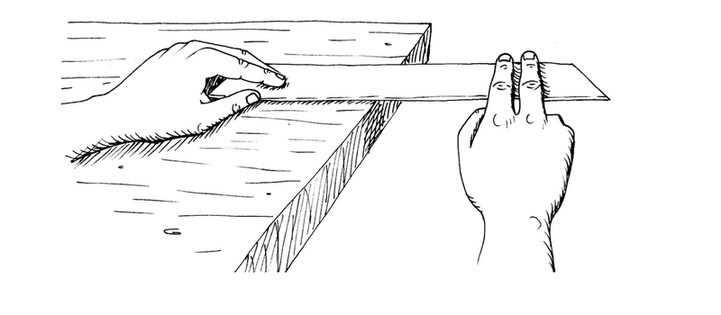
Figuur 17
Vou nou jou papierstrook weer
halfpad oop en vou dit weer, sodat jy ’n
driehoekige buis kry, soos hieronder gewys word.
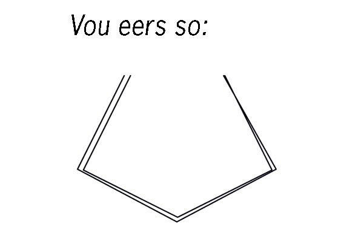
Figuur 18
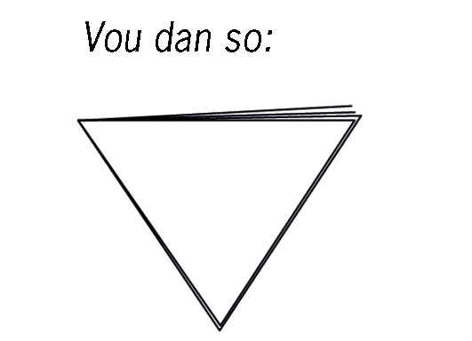
Figuur 19
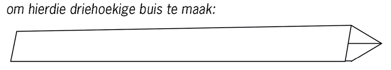
Figuur 20
Plaas die driehoekige buis oor die
kant van jou lessenaar soos wat jy met die
plat strook in vraag 2 gedoen het. Druk dit met een hand op die
lessenaarblad vas en druk dan liggies na onder met die ander hand
op die verste deel om dit te laat afbuig.
Wat was die maklikste om te
buig, die plat strook of die driehoekige buis?
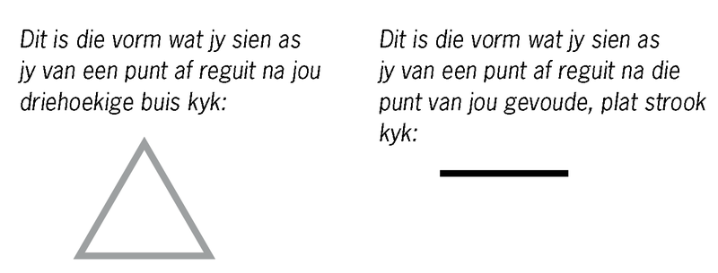
Figuur 21: Dwarssnitte
Die vorm wat jy sien as
jy reguit na een punt van ’n deel van ’n struktuur kyk,
word ’n “dwarssnit” of ’n “profiel” genoem.
Maak vryhandsketse
van die dwarssnitte van ’n ronde, ’n vierkantige en ’n
driehoekige buis in die spasie hieronder.
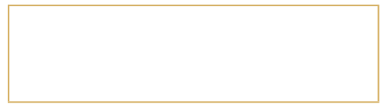
Maak jou driehoekige buis oop
en vou dit weer om
’n buis met ’n T-profiel, soos hier regs vertoon, te
maak.
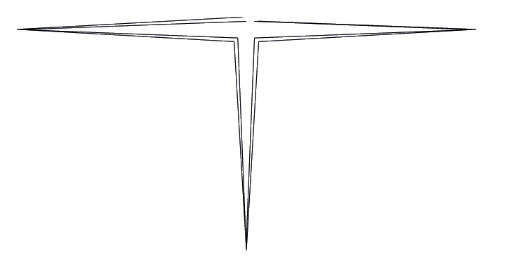
Figuur 22
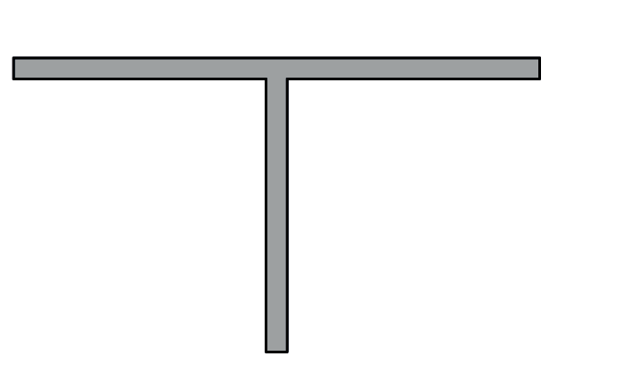
Figuur 23
Laat jou T-vormige “balk”
soos hier regs gewys,
regop op jou skoolbank staan en druk liggies van
die bo-punt na onder. Moenie dit nou buig nie.
Neem een van die plat stroke wat jy vir vraag 1
gemaak het. Hou dit regop en druk dit na onder
soos jy met die T-vormige balk gemaak het.
Watter een van die twee stroke is die sterkste as
jy afwaartse druk op die punt daarvan toepas,
die plat strook of die T-vormige balk? Verduidelik
waarom.
’n T-vormige balk weerstaan drukkrag beter as
’n plat strook wat ewe lank is en van dieselfde
hoeveelheid materiaal (papier) gemaak is.
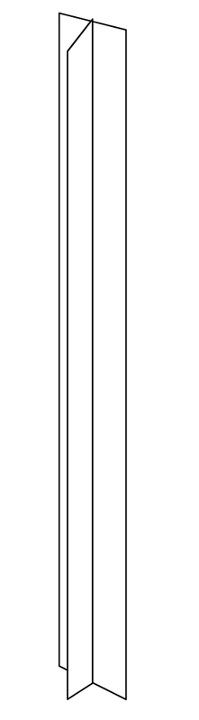
Figuur 24
Vergelyk die drukweerstandigheid
van verskillende balke en buise, elk gemaak
van een vel A4-papier, met die volgende deursnit-vorms of profiele: T-vorm;
vierkantvorm en ronde vorm. Verduidelik jou antwoorde.
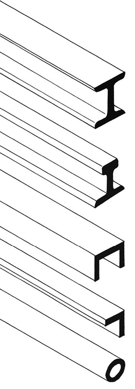Figuur 25: Metaal balke
Metaalbalke wat
gebruik word om raamstrukture
te bou, word in ’n verskeidenheid profiele
vervaardig. ’n Klompie gewilde profiele word
hieronder gewys.
H-profiel. Hierdie profiele word dikwels
gebruik
as regop stutte of pilare, byvoorbeeld in geboue.
Dit weerstaan druk baie goed en buig nie maklik
nie.
I-profiel. Hierdie profiel word vir
spoorstawe
gebruik. Die breë basis verskaf stabiliteit.
U-profiel. Hierdie profiel is ligter as die
H-profiel.
Dit word dikwels gebruik om horisontale
ondersteuning te gee, byvoorbeeld in rakke. Die
onderstel van ’n vragmotor word normaalweg
met U-balke gemaak.
Hierdie profiel word ’n hoekyster genoem,
selfs
al is dit van ’n ander metaal gemaak. Dit het ’n
hoër buigkrag as plat stroke. Dit is lig en word
dikwels vir kruisverspanning in kragmaste,
torings en ander strukture gebruik.
Buisprofiel. Dit is die beste profiel om
verwringing te weerstaan.
Gebruik van interne kruisverspanning om verwringing te voorkom
Stel jou voor jy het met
reguit stukkies
hout ’n raamstruktuur gemaak.
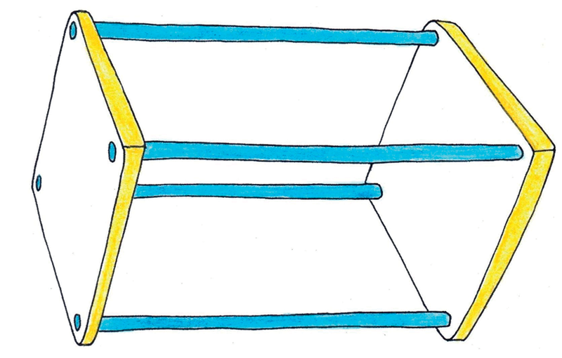
Figuur 26
Stel jou nou voor jy
draai hierdie struktuur
inmekaar soos die persoon op die foto die
handdoek inmekaardraai.
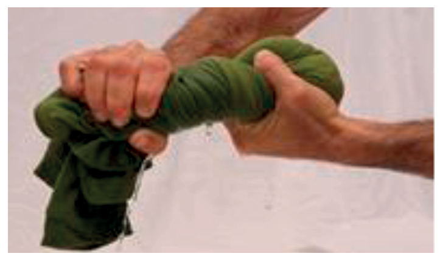
Figuur 27
Die raamstruktuur mag
uiteindelik so lyk:
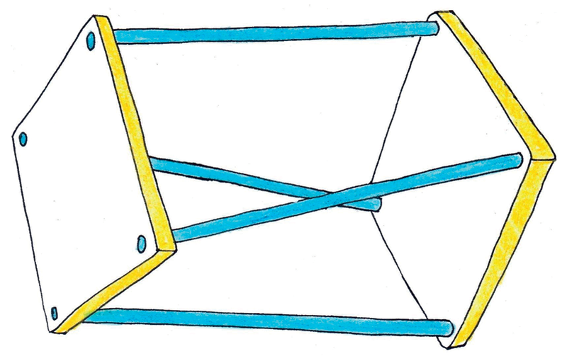
Figuur 28
Om te voorkom dat die
struktuur so
opgedraai word, moet jy, soos wat hier
gewys word, meer elemente byvoeg.
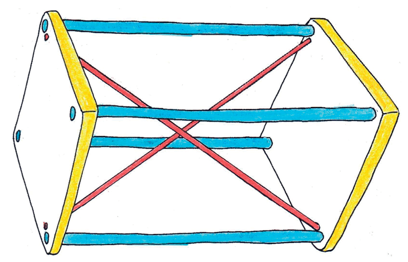
Figuur 29
Dit word interne kruisverspanning genoem.
Verskillende materiale vir verskillende doeleindes
Hoe materiale van mekaar kan verskil
Wat buig die maklikste, jou potlood
of ’n papiervel?
Plaas ’n papiervel plat op jou
skoolbank se blad neer. Tel dit met beide hande op
en buig dit sonder om dit te vou. Plaas dit terug op die bank. Is dit weer plat?
Materiaal wat maklik buig, maar maklik na sy
oorspronklike vorm terugkeer, as jy dit laat los, word
buigsame materiaal
genoem.
Materiaal wat nie buigsaam is nie, word
onbuigsame
of
stywe materiaal
genoem.
Is klei buigbaar of styf?
Is die poot van ’n stoel
buigbaar of styf?
Is ’n stuk draad buigbaar of
styf?
Is jou skoen buigbaar of styf?
Druk jou vinger teen jou
skoolbank. Druk nou jou vinger teen jou arm.
Wat is die verskil tussen die druk van jou vinger teen jou bank, en die
druk van
jou vinger teen jou arm?
As jy met jou vinger teen ’n sak
sand druk, sal dit dieselfde wees as om teen jou
bank of jou arm te druk?
Bakstene word gemaak deur klei
te bak totdat dit hard is.
Sommige materiale is hard, en
ander materiale is sag.
Dink aan ’n baksteen en ’n stuk
skuimrubber van dieselfde grootte
(soos die skuimrubber wat in matrasse gebruik word).Watter een van die
twee is die maklikste om op te tel?
Hoeveel stene dink jy kan jy met
gemak dra as jy hulle in ’n krat op jou
skouer dra?
Hoeveel stukke baksteengrootte
skuimrubberstukke dink jy kan jy met
gemak dra as jy hulle in ’n krat op jou skouer dra?
’n Baksteen is baie swaarder as ’n stuk skuimrubber
met dieselfde grootte.
Een verskil tussen gebakte klei en skuimrubber is, dat as jy twee ewe groot
stukke daarvan het, die gebakte klei swaarder as die skuimrubber sal wees. Dit
sal
meer arbeid vereis om gebakte klei op te tel of te dra.
Die verskil tussen gebakte klei en skuimrubber kan soos volg beskryf word:
gebakte klei het ’n hoër digtheid as skuimrubber.
Watter materiaal het die hoogste
digtheid, hout of rots?
Watter materiaal het die
hoogste digtheid, glas of plastiek?
Stukkies metaal wat buite
rondlê, lyk soms bruin.Dit
word roes of korrosie genoem. Roes word gevorm deur
’n chemiese reaksie tussen die metaal en suurstof in
die lug of water. Hout en glas roes nie. Rots wat yster
bevat, roes.As jy in die veld stap, sien jy soms stukke
rots met presies dieselfde bruin kleur.
Geroeste rots kan verskillende
kleure hê, soos die kleure in
die gekleurde strook onder aan
hierdie bladsy. In die verlede
is kleur om verf te maak van
geroeste rots verkry.
Metaal word gebruik vir die
bouwerk aan torings, dakke, motors en vragmotors
en soms selfs meubels.Wat kan ’n mens doen om te voorkom dat metaal roes?
lets meer oor metale
Daar is baie verskillende metale soos
koper,
yster, aluminium, chroom, goud, platinum en baie
ander. Omdat yster so volop is, is dit goedkoper
as die meeste ander metale. Yster is ’n maklike
metaal om mee te werk omdat dit maklik in
verskillende vorms verwerk kan word. Yster
word meestal met ân bietjie koolstof gemeng om “staal” te vorm, wat baie sterker
as suiwer yster
is. Ongelukkig roes yster maklik terwyl ander
metale nie so maklik, of glad nie, roes nie.
Om
hierdie rede word yster dikwels met ander metale
gemeng, byvoorbeeld chroom, om dit meer
bestand teen roes te maak. “Vlekvrye staal” is
staal wat baie chroom in het.
Materiale in ’n huis
’n Huis is ’n goeie voorbeeld van ’n struktuur wat
met baie verskillende materiale
gemaak word. Om ’n huis soos die een hieronder te bou, moet jy bakstene, beton,
hout en metaal gebruik.
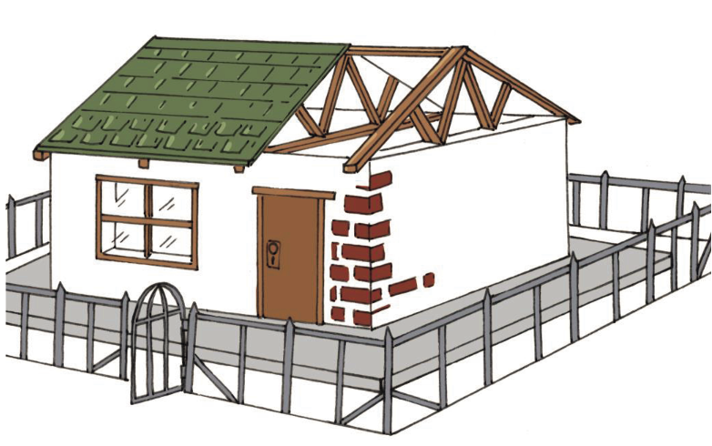
Figuur 30
Verskillende dele van die huis word gelys in die linkerkantse kolom van die
tabel hieronder. Skryf in die regterkantse kolom van watter materiaal jy dink
die betrokke deel van die huis gemaak is.
Deel van die huis
Materiaal waarvan
dit gemaak is
Die mure
Die vensterrame
Die deur
Die dakstruktuur
Die dakbedekking
Die heining
Die plaveisel om die huis
Bouers gebruik bakstene, beton, hout en staal,
want elkeen van hierdie materiale
is op verskillende maniere bruikbaar. Jy kan sê verskillende materiale het
verskillende “eienskappe”.
Beton is hard en sal nie maklik skrape opdoen nie,
daarom gebruik bouers dit op
huisvloere. Beton is ook ferm, daarom buig dit nie as ons daaroor loop nie.
Beton
word nie deur water beskadig nie en sal nie roes nie.
Bakstene buig nie en roes nie, daarom word hulle
gebruik om mure mee te bou.
Hout, omdat dit buigsaam is, word in ’n huis
gebruik vir deure, vensters en
dakke. Dit beteken dat as jy die deur hard toeslaan, die hout effens sal meegee
maar nie sal breek nie. Hout is ook lig, goedkoop en maklik om mee te werk.
Hout kan deur water en die hitte van die son
beskadig word. Wanneer hout nat
word, kan dit skeeftrek en vrot. Om hout teen beskadiging te beskerm en dit
langer
te laat hou, moet dit met ’n laag vernis, spesiale olie of enige ander
beskermende
materiaal bedek word.
Staal is sterk en hard. Dit is ook buigsaam en nie
maklik om met ’n hamer
stukkend te slaan nie. Dit word daarom vir sekuriteitshekke gebruik. Staal word
egter deur water beskadig, in ’n proses wat roes of korrosie genoem word. Om te
voorkom dat staal roes, moet mens dit met ’n spesiale verflaag bedek.
Skryf die materiale
wat vir die onderskeie dele van die huis gebruik word in die
middelkolom hieronder. Skryf daarna die redes waarom jy dink elke materiaal
vir daardie spesifieke deel van die huis gebruik word, in regterkantse kolom.
Deel van die huis
Materiaal
Redes vir keuse van
materiaal
Mure
Vensterrame
Deur
Dakstruktuur
Dakbedekking
Heining
Plaveisel om die huis
Party huise het teëldakke, ander het sinkdakke. Wat is die voordele
en
nadele
van teëldakke?
Voordele van teëldakke
Nadele van teëldakke
Wat is die voordele en nadele van sinkdakke?
Voordele van sinkdakke
Nadele van sinkdakke
In die ou dae is wawiele van hout
gemaak. Vandag gebruik ons
rubberbuitebande. Waarom het ons van hout na rubber oorgeskakel?
Wanneer bouers ’n ruit in ’n
vensterraam sit, druk hulle ’n sagte, klewerige
materiaal, wat stopverf genoem word, al om die rande van die ruit. Die
stopverf droog uit totdat dit hard is, en verhoed dat die glas uit die raam val.
Grondboontjiebotter is ook ’n sagte, klewerige materiaal wat uitdroog in die son
totdat dit hard is. Waarom is dit nie ’n goeie idee om grondboontjiebotter te
gebruik om ruite in vensterrame te sit nie?
Volgende week
Volgende week begin jy met jou praktiese
assesseringstaak. Jy gaan ’n plan maak
om ’n probleem vir ’n gemeenskap op te los.